Seasats
Captures desktop
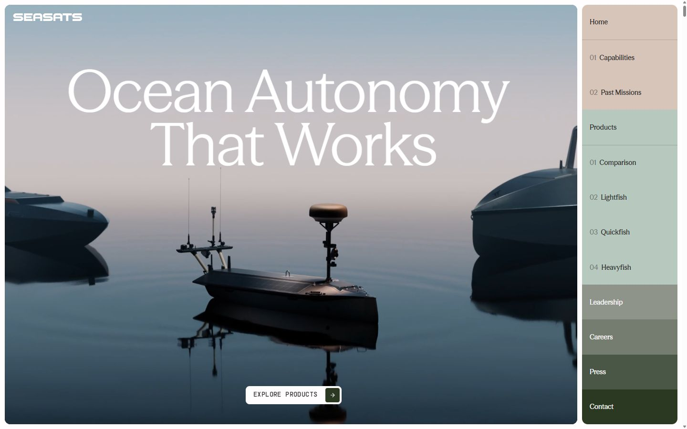

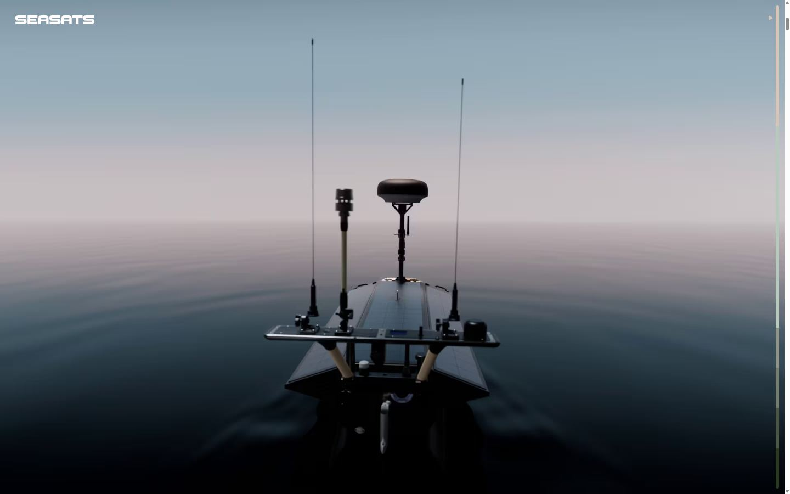
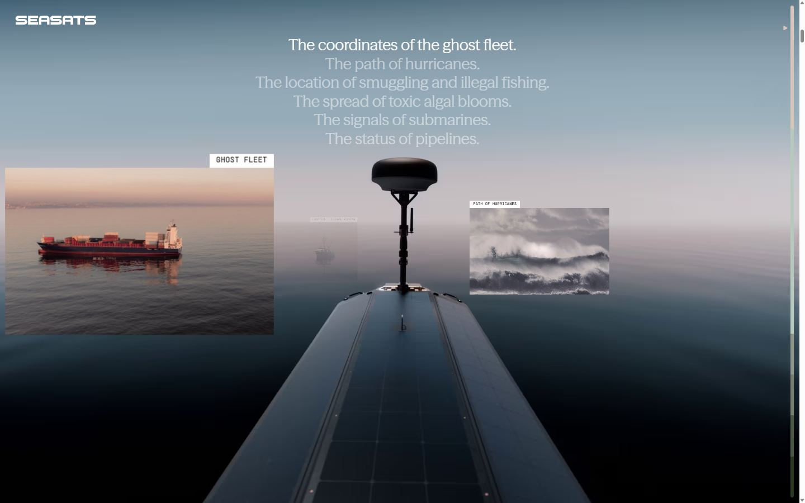
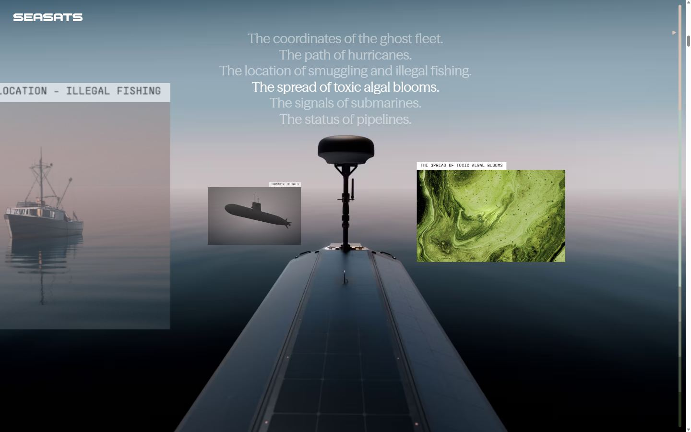
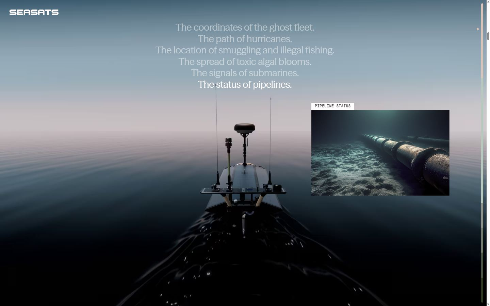
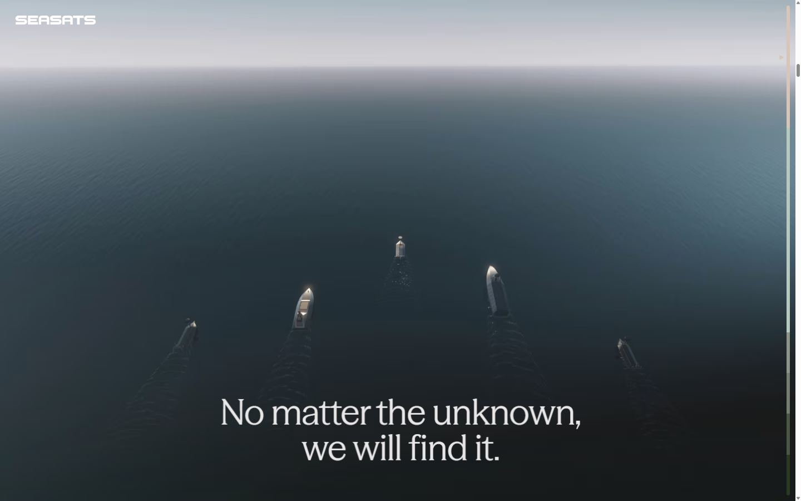
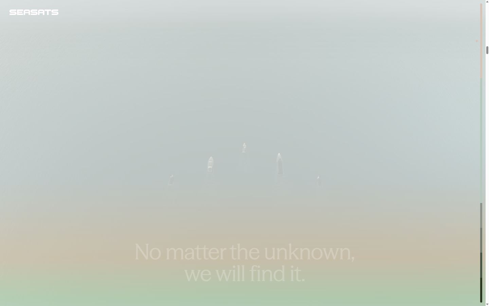
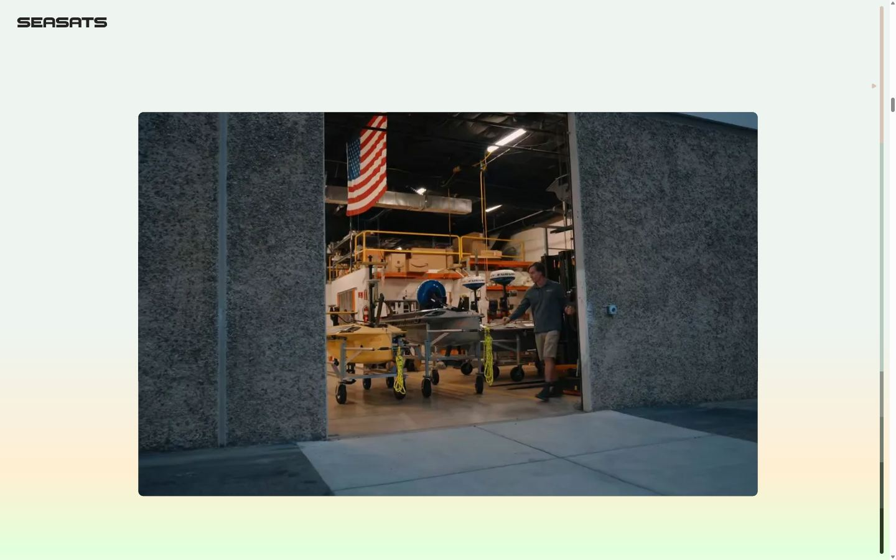
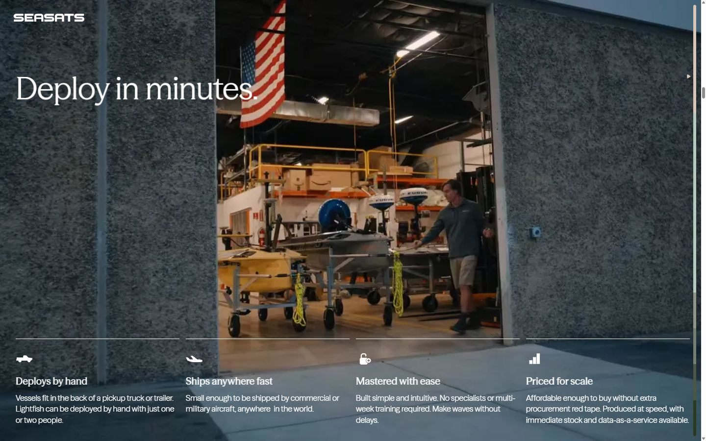
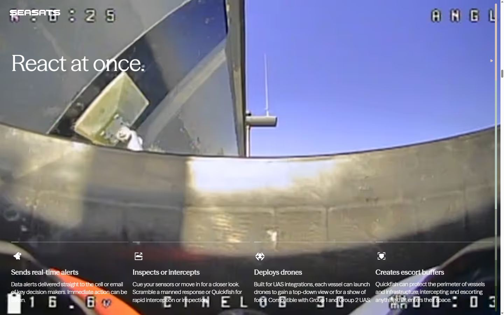
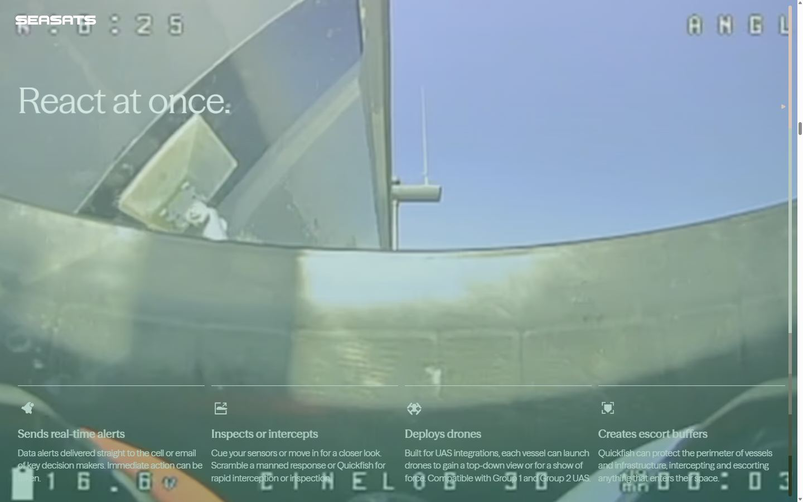
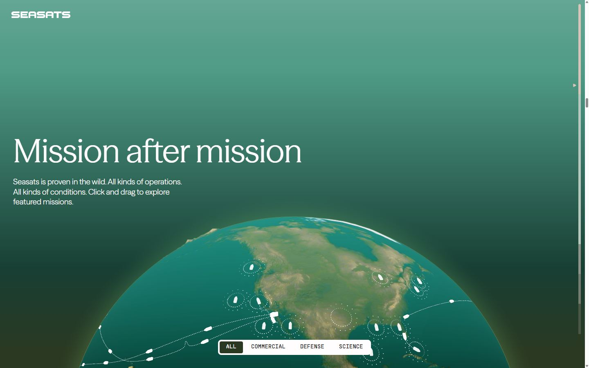
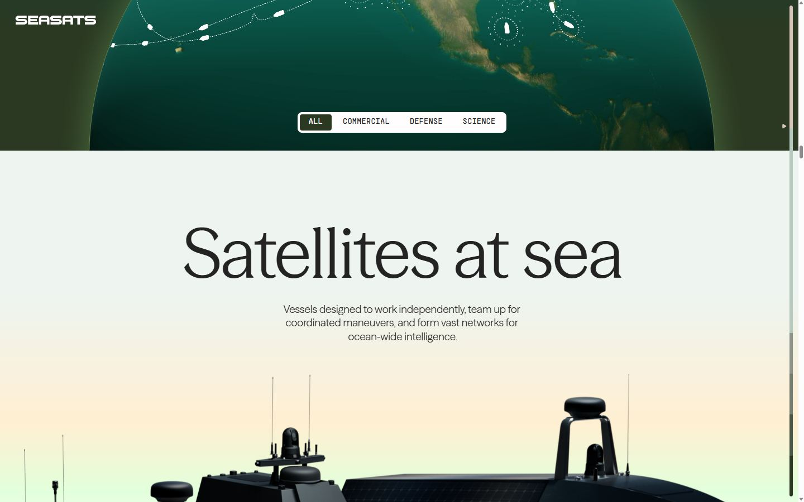
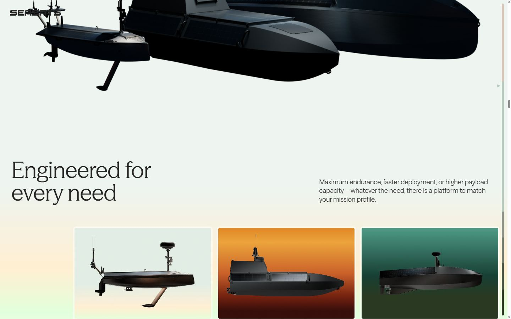
Pages internes
Mobile
Stack détectée
CMS Payloadcms, GSAP, Lenis, Next.js, React, React Three Fiber, ScrollTrigger, SplitText/SplitType, Swiper, Three.js, Virtual scroll, WebGL
Versions : GSAP 3.11.0 · Three.js r?
Shaders GLSL personnalisés extraits : 14 (voir shaders.glsl)
Design tokens
Couleurs (fonds, pondérées par surface)
#fffdfd · #d9d9d9 · #232323 · #cfcfcf · #000000 · #b7c8be · #d7c5ba · #2b3922
Couleurs de texte
#232323 · #fffdfd · #ffffff · #2b3922
Polices utilisées (par volume de texte)
seasonSans · seasonMix · supplyMono
Fichiers de police chargés
Typographie
| Élément | Police | Taille | Graisse | Interligne | Interlettrage | Casse |
|---|---|---|---|---|---|---|
| h1 | seasonMix, "seasonMix Fallback", serif | 124px | 400 | 111.6px | -1.24px | none |
| h2 | seasonMix, "seasonMix Fallback", serif | 80px | 400 | 80px | -0.8px | none |
| h3 | seasonMix, "seasonMix Fallback", serif | 64px | 400 | 64px | -0.64px | none |
| h4 | seasonMix, "seasonMix Fallback", serif | 20px | 500 | 24px | normal | none |
| p | supplyMono, "supplyMono Fallback", monospace | 14px | 400 | 12.6px | normal | uppercase |
| a | seasonMix, "seasonMix Fallback", serif | 14px | 500 | 18.2px | normal | none |
| button | supplyMono, "supplyMono Fallback", monospace | 12px | 400 | 10.8px | normal | uppercase |
| li | seasonMix, "seasonMix Fallback", serif | 28px | 400 | 33.6px | normal | none |
| body | seasonSans, "seasonSans Fallback", sans-serif | 16px | 400 | 22.4px | normal | none |
Échelle des tailles de texte
14px (229) · 12px (146) · 16px (136) · 24px (81) · 20px (53) · 19px (35) · 124px (9) · 32px (9) · 64px (7) · 28px (6) · 80px (6) · 18px (4) · 48px (2)
Arrondis
8px · 4px · 6px · 2px
Transitions CSS fréquentes
Points de rupture (media queries)
519px · 1023px · 520px · 1024px · 768px
Animations CSS (@keyframes)
swiper-preloader-spin, Preloader_preloaderOut__7TtFA, Preloader_letterHide__YIkgB, Toast_toast-hide__lE1eT, Toast_toast-slideIn__BxcBZ, Toast_toast-swipeOut__gPuFR, LivestreamWidget_livestreamDot__an5Zk, Footer_parallax__XK28M, BoatPhoto_photoFadeIn__3SD7f, BoatPhoto_wrapperScale__zl0ku, BoatPhoto_innerClipPath__BVFuS, BoatPhoto_mediaScale__LEeXS, Checkbox_toggleIn__XwrQz, Select_select-enter__WLPf_, Select_select-exit__nd9rO, CareersDropdown_select-enter__qI_D4, CareersDropdown_select-exit__06OXs, ProductStory_parallax__hriNH
Variables CSS (:root)
--swiper-theme-color: #007aff; --wrapperWidth: 144rem; --headerHeight: 6rem; --columns: 8; --columnWidth: calc((min(100vw, var(--wrapperWidth)) - 2 * var(--margin) - (var(--columns) - 1) * var(--gutter)) / var(--columns)); --gutter: 1.2rem; --margin: 1.6rem; --radius: 0.8rem; --colorText: #fffdfd; --colorAccent: #bf5114; --gradient: linear-gradient(180deg,#e08826 -48.83%,#eca43b -22.63%,#ca612a 33.9%,#752210 75.45%,#370e0a 116.33%); --body-adjustOffset: -27rem; --body-adjustScale: 0.9; --body-adjustScalePrecise: 0.847; --uiOffset: 48px;
Structure de la home
Hauteur : 34147 px — 2243 nœuds DOM — canvas 5, vidéos 26, images 119
| # | Bloc | Hauteur | Titre | Médias |
|---|---|---|---|---|
| 1 | div#hero .section heroMedia HeroMedia_container__F | 900 | Ocean Autonomy That Works | 4 |
| 2 | div .section flythroughPoints FlythroughPoint | 5040 | 7 | |
| 3 | div#capabilities .section virtues Virtues_container__sQLEg | 4050 | Deploy in minutes. | 39 |
| 4 | div#past-missions .section missions Missions_container__YIP | 900 | Mission after mission | 30 |
| 5 | div#products .section productIntro ProductIntro_contai | 891 | Satellites at sea | 1 |
| 6 | div#comparison .section productComparison ProductCompari | 1183 | Engineered for every need | 4 |
| 7 | div .blockGroup | 17755 | Lightfish | 42 |
| 8 | div#leadership .section Leaders_container__3xVqh overlay | 601 | Leadership | 6 |
| 9 | div#careers .section Careers_container__wm02o overlay | 610 | Join the crew. Build the future. | 0 |
| 10 | div#press .section Press_container__jDYph overlay-a | 1098 | Press, | 5 |
| 11 | div#contact .section callToAction CallToAction_contai | 797 | Take action | 0 |
Navigation : Home · 01Capabilities · 02Past Missions · Products · 01Comparison · 02Lightfish · 03Quickfish · 04Heavyfish · Leadership · Careers · Press · Contact · HomeHome · ProductsProducts · CareersCareers · PressPress · ContactContact · LinkedInLinkedIn · Privacy PolicyPrivacy Policy
Boutons / CTA : Home · 01Capabilities · 02Past Missions · Products · 01Comparison · 02Lightfish · 03Quickfish · 04Heavyfish · Leadership · Careers · Press · Contact · Explore productsExplore products · Download full statsDownload full stats
SEO
Plan des titres
Performance (mesure locale, Chrome headless, connexion non bridée)
Mobile
Fichiers
captures/ : arrivée, scroll desktop (1440×900), pleine page, pages internes, mobile (390×844 @2x) ; vidéo de scroll dans la release GitHub « videos » (lien en haut de fiche)page.html : DOM rendu · styles.css : CSS chargé · scripts/ : JS chargé (index dans _index.json) · shaders.glsl : shaders extraits · rea-bundle.json : analyse REA du bundle (chunks, routes, endpoints)